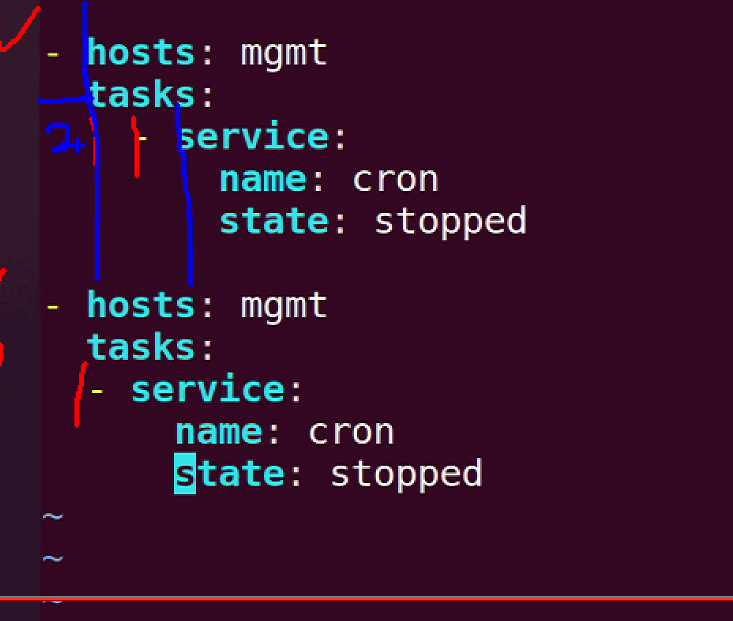

4. 플레이북
4.1 플레이북 구문
플레이북은 yaml(yaml.org) 형식을 따른다(Ain't Markup Language)
1) Yaml 기본
Ansible 플레이북의 Yaml 파일은 항상 목록으로 시작되며
목록의 각 항목은 해시, 사전이라는 키/값 쌍을 가지고 있음
선택적으로 Yaml 파일의 시작은 --- 끝은 ...으로 나타냄
- .vimrc
syntax on autocmd FileType yaml setlocal ts=2 sts=2 sw=2 expandtab autoindent2) 목록
하나의 작업이 목록이 됨 목록은 -와 공백으로 시작
3) 사전
키/값으로 구분
# An employee record
martin:
name: jolla
job: Developer
4) 사전 목록
목록: [] 사전: {}
5) 부울값
yes = true = True = TRUE = 1 no = false = False = FALSE = 0
부울 값을 yamllint 옵션과 호환되도록 하려면 'true', 'false'를 권장
6) 여러 줄 값
> 또는 |로 사용
include_newlines: |
exactly as you see
will appesr these three
lines of poetry
fold_newlines: >
this is really a
single line of text
despite appearances
7) 종합예시
# An employee record
- name: jolla
job: Developer
employed: True
foods:
- Apple
- Ornage
languages:
golang: Elite
c: Elite
description: |
jolla
is
a
developer
8) 주의사항
value에 : 가 들어가는 경우는 작은 따옴표나 큰 따옴표로 인용부호를 사용
버전을 지정하는 경우 소수값이나 정수값이 될 수 있으므로 인용부호를 써서 문자열로 사용한다. ex) "1.0"
4.2 플레이북 기본
- Ad-hoc command
요거를 yaml 형식으로 바꾸면? ```yamlansible <아이피|그룹> -m command -a ip
hosts: <아이피|그룹> tasks:
- command: id ```
Ad-hoc
$ ansible mgmt -m service -a 'name=cron state=stopped'``` yaml
hosts: mgmt tasks:
- service: name: cron state: stopped ```
플레이북: 하나 이상의 플레이를가짐
- 플레이: 하나 이상의 작업을 가짐
- 작업: 하나의 모듈과 모듈의 옵션/아규먼트를 지정
1) 플레이북의 기본 구조
 원칙적으로는 아래의 형태가 맞지만, 둘다 옳다. 같은 레벨끼리의 들어쓰기만 맞으면 된다.
- name: update web servers # 플레이/플레이 이름
hosts: webservers # 호스트 패턴
tasks:
- name: ensure apavhe is at the latest version # 작업 작업이름
yum: # 모듈/모듈이름
name: httpd # 모듈 옵션/아규먼트
state: latest
- name: write the apache config file # 작업
template:
src: /src/httpd.j2
dest: /etc/httpd.conf
- name: update db servers # 플레이
hosts: databases
remote_user: root
tasks:
- name: ensure postgresql is at the latest version # 작업
yum:
name: postgresql
state: latest
- name: ensure that postgresql is started # 작업
service:
name: postgresql
state: started
2) 작업 실행
- 호스트패턴과 일치하는 모든 시스템에 작업을 실행
- 지정한 모듈의 욥션을 활용하여 실행
- 작업 완료시 다음 작업으로 이동
- 작업 실패한 호스트에서는 작업 남아있어도 종료
3) 멱등성
연산을 여러번 실행하여도 결과가 같아야 함
- service 모듈의 경우 이미 시작 되어 있는 경우 state=started 옵션을 주상태 변화가 일어나지 않고 changed: false 로 나옴.
- copy 모듈의 경우 여러번 실행 해봤자 한번만 수행됨
ansible 192.168.200.101 -m command -a 'ls /tmp/hosts'
ansible 192.168.200.101 -m copy -a
멱등성을 제공하지 않는 모듈
- 명령 관련 모듈: command, shell, raw
- service 모듈의 서비스 재시작
- 가능하면 멱등성을 제공하지 않는 모듈은 사용을 하지 않는 것을 권장
4.3 플레이북 실행 및 검증
플레이북 실행은 ansible-playbook 명령으로 실행한다.
ansible-playbook main.yaml
test.yaml
- hosts: mgmt
tasks:
- ping:
- copy:
src: /etc/hosts
dest: /tmp/hosts
- service:
name: cron
state: started
1) 플레이북 실행
ansible-playbook <YAML 파일명>
2) 구문 체크
ansible-playbook <YAML 파일명> --syntex-check
3) 체크 모드
ansible-playbook <YAML 파일명> --check
4) 차이점 모드
차이점 모드의 경우 많은 양의 출력이 생성될 수 있기 떄문에
특정 호스트로 제한하여 실행한다.
- 특정 호스트로 제한하여 실행하기
--limit의 경우 task를 실행할 때 특정 노드만 선택하여 작업 가능하다.ansible-playbook main.yaml --check --diff --limit 192.168.200.101
5) 작업 목록 확인
ansible-playbook <YAML 파일명> --list-tasks
$ ansible-playbook main.yaml --list-tasks
playbook: main.yaml
play #1 (mgmt): mgmt TAGS: []
tasks:
ping TAGS: []
copy TAGS: []
6) 호스트 목룍 확인
ansible-playbook <YAML 파일명> --list-hosts
7) Ansible Lint
ansible-lint <야믈이름>
실습
- host: 192.168.200.101
- apt 패키지 설치: apache2, php
- index.php 파일 /var/www/html 복사: copy
<?php phpinfo(); ?>
접근 확인: uri - 선생님 풀이 ```yaml
- name: Simple Web Deploy
hosts: 192.168.200.101
become : true 모든 플레이에 해당 옵션 줌
tasks:- name: Install Package apt: name: apache2, libapache2-mod-php update_cache: true state: present
- name: Copy PHP Contents copy: src: index.php dest: /var/www/html/index.php backup: true
- name: Start service: name: apache2 state: started enabled: true
- name: service uri: url: "http://192.168.100.201/index.php" ```
사람들이 특정 작업에만 원칙적으로 하는건 맞긴한데
귀찮아서 명령어 쓸 때 하든지 플레이 전체에 하든지 함
선생님은 명령어로만 become 옵션 주신다함!
ansible-playbook <YAML 파일명> --syntax-check
ansible-playbook <YAML 파일명> -b # -b --become 옵션으로 권한 상승하여 실행한다.
관습적으로 hosts와 tasks 사이에는 줄바꿈을 한다.
copy 모듈에 backup 옵션이 있는데 true라고 했을 때 타임스탬프를 추가하여 백업해둔다.
- 개인 풀이 1 ```yaml
name: Install Apache2 and PHP hosts: 192.168.200.101
tasks:
- name: Update Cache become: true apt: update_cache: yes
- name: Install Apache2 become: true apt: name: apache2 state: latest
- name: Install PHP become: true apt: name: php state: latest
- name: Copy index.php
become: true
copy:
dest: "/var/www/"
content: |
```<?php phpinfo(); ?>
개인 풀이2
name: apache php practice hosts: mgmt tasks: - name: install apache2 apt: name: apache2 update_cache: yes state: latest - name: install php apt: name: php - name: copy index.php copy: src: ~/index.php dest: /var/www/html - name: start apache2 service service: name: apache2 state: started - name: curl test uri: url: http://localhost